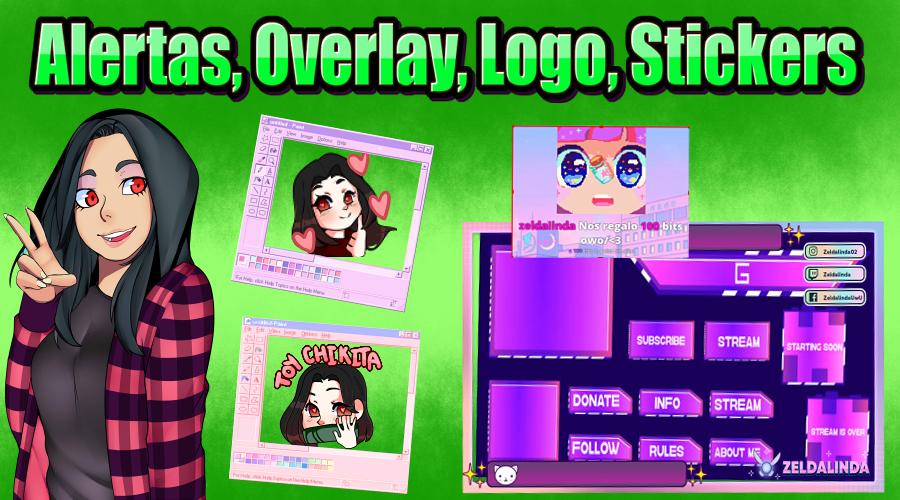

Consejos para empezar en el mundo del stream

| Los consejos que te voy a dar aqui son gracias a mi experiencia de muchas
cosas que he pasado a lo largo de 1 año haber probado
2 plataformas que son Facebook y Twitch:
- uno de los primeros consejos que te puedo dar es simplemente se tu mismo,
si quieres ser un personaje o interpretar una personalidad es valido mientras siempre
seas respetuoso con tu audiencia.
- segundo consejo te recomiendo empezar con un juego que te agrade y no transmitas un juego por visitas
ya que va a llegar un momento en el cual no te vas a sentir comodo al momento de stremear.
- No te preocupes si los primeros dias no tiene publico, es algo completamente normal te recomiendo
que les pidas ayuda tus amigos para que compartan tu stream y te acompañen al momento de tu primera trasmision
para que tu tambien no te sientas solo.
- Y punto más importante para mi nunca te rindas apesar de lo que pase
criticas siempre va a haber muchas, personas que no les guste tu contenido tambien habra, pero vida solo tienes una
!!Vivela al limite, esfuerzate, crea, si te caes levantate, y sobre todo jamas te rindas!!!!